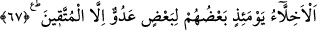

kara ve karanlık bir sayfa olarak kapanır. Şâyet o sayfada bir istiğfâr olursa o sayfa
parıldayan bir nurla kapanır. Bu istiğfâr kelimesinden Allah Teâlâ bir takım rahmet
melekleri yaratır ki o melekler o kişi için rahmet ve mağfiret talebinde bulunurlar.”
İyi bilinmelidir ki kıyâmetin üç merhalesi vardır. Bunlardan birincisi kıyâmet-i kübrâ
yani büyük kıyâmettir. Bu, tüm insanların cesetlerinin diriltilip hesap için mahşer yerine
sevk edilmeleridir. İkincisi kıyâmet-i suğrâ yani küçük kıyâmettir. Bu da herkesin kendi
ölümüdür. Peygamberimiz (s.a.) “ölenin kıyâmeti kopmuştur”[188] buyurmaktadır.
Bundan dolayı kabir ya cennet bahçelerinden bir bahçe yahut cehennem çukurlarından
bir çukur kabul edilmiştir. Üçüncüsü ise kıyâmet-i vustâ yani orta kıyâamettir. Bu da
bütün canlı yaratıkların ölmesidir. Bu kıyâmetin kopuş zamanı kesin olarak
bilinmemektedir. Ancak Peygamberimiz (s.a.)’den nakledilen bir takım alâmetlerle bu
kıyâmetin yaklaşmış olduğu bilinir. Bu alâmetlerin bazıları şunlardır: İlmin kalkması,
cehâletin çoğalması, zinâ ve şarap içmek gibi günahların alenî ve yaygın olarak
işlenmesi, çeşitli savaşlarda erkeklerin öldürülüp kadın nüfusun artması. Öyle ki elli
kadını yalnız bir erkek himaye edecek, erkek ve kadın nüfusu arasında bu derece denge
bozulacaktır.
Hz. Ali (r.a.)’in şöyle dediği rivâyet edilmektedir: İnsanlar üzerine öyle bir zaman
gelecek ki İslâm’ın sâdece ismi, dînin sâdece resmi, Kur’ân’ın da sâdece dersi
kalacaktır. O zaman insanlar görkemli câmiler inşâ edeceklerdir. Ancak bu câmiler
Allah’ın zikrinden uzak ve mânen harap durumda olacaktır. O devrin en kötüleri âlim ve
bilgin geçinenler olacaktır. Fitne onlardan çıkıp yine onlara dönecektir.
Şeyh Sa’dî şöyle demiştir:
İlim seni her ne kadar âlim yapsa da,
Amel olmadıkça bu boş bir iddiâ ve yalandan ibarettir.
Nitekim, “günahtan uzak durmayan âlim elinde meş’ale tutan bir köre benzer”
denilmiştir. Yani kişi başkasının hidâyetine vesile olup kendisi o hidâyetten
nasiplenmemektedir. Amelsiz ilimden Allah’a sığınırız.
67. O gün, Allah’a karşı gelmekten sakınanlar dışında, dost olanlar (bile)
birbirlerine düşman kesilirler.
“O gün, muttakiler”in dünyadaki dostlukları Allah için olduğundan bu dostluk aynen
korunacaktır. Hatta bu dostluktan hâsıl olan sevap ve yüksek dereceleri müşâhede
etmeleriyle dostlukları bâki kalacak, hatta daha da artarak devam edecektir.
Muttakilerin “dışında, dostlar” aralarındaki dünyevî dostluk ve sevgi, azâba sebep